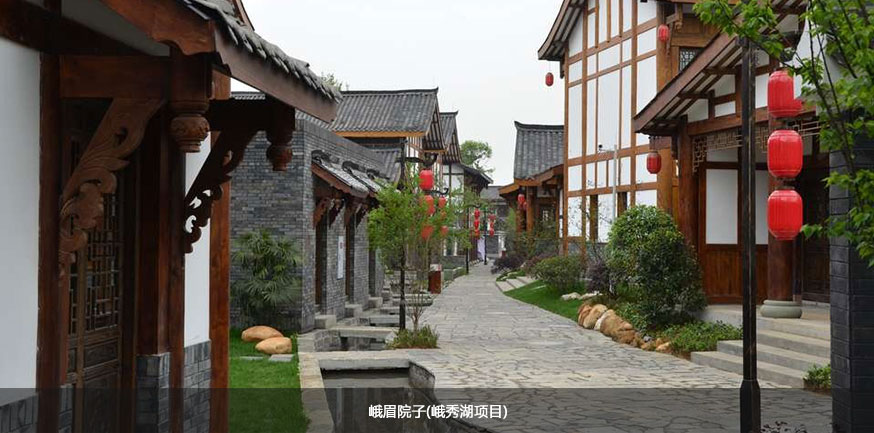
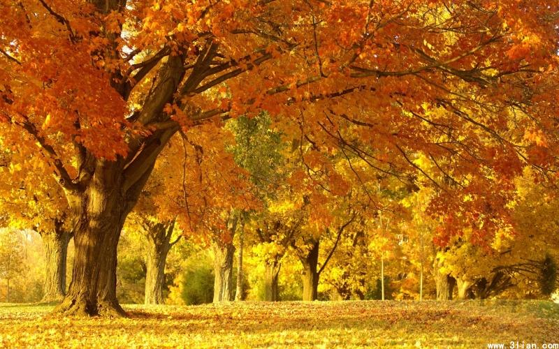

蓝光文旅
2010年9月21日峨眉山下，蓝光峨秀湖国际度假区与Minor国际酒店旗下的安纳塔酒店举行了盛大的签约仪式，乐山市、峨眉山市主要政府领导[详情]峨秀·美图
<



>
峨眉山首届全民趣味竞技大冲关
13日下午，由蓝光文旅举办的“峨眉山首届全民趣味峨眉山首届全民趣味竞技大冲关
13日下午，由蓝光文旅举办的“峨眉山首届全民趣味峨眉山首届全民趣味竞技大冲关
13日下午，由蓝光文旅举办的“峨眉山首届全民趣味蓝光文旅
2010年9月21日峨眉山下，蓝光峨秀湖国际度假区与Minor国际酒店旗下的安纳塔酒店举行了盛大的签约仪式，乐山市、峨眉山市主要政府领导[详情]蓝光文旅
2010年9月21日峨眉山下，蓝光峨秀湖国际度假区与Minor国际酒店旗下的安纳塔酒店举行了盛大的签约仪式，乐山市、峨眉山市主要政府领导[详情]吴永发 苏州大学城市环境建筑学院长
峨秀汇以四川民俗文化为主题，以酒吧、茶楼、书吧为吴永发 苏州大学城市环境建筑学院长
峨秀汇以四川民俗文化为主题，以酒吧、茶楼、书吧为吴永发 苏州大学城市环境建筑学院长
峨秀汇以四川民俗文化为主题，以酒吧、茶楼、书吧为